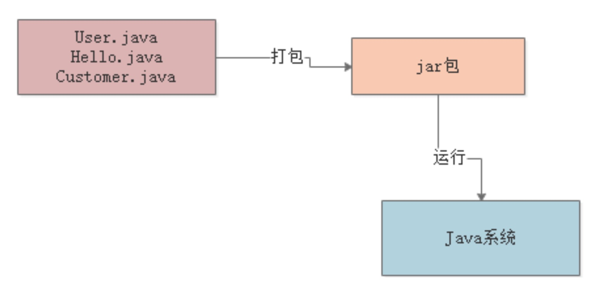
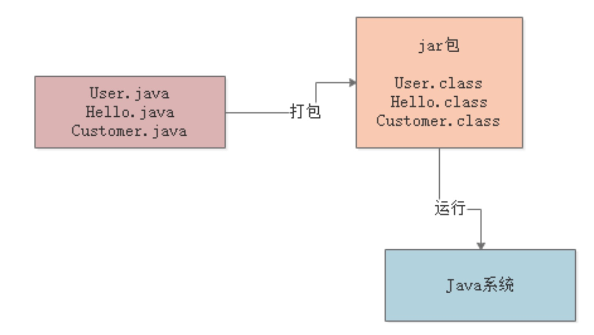
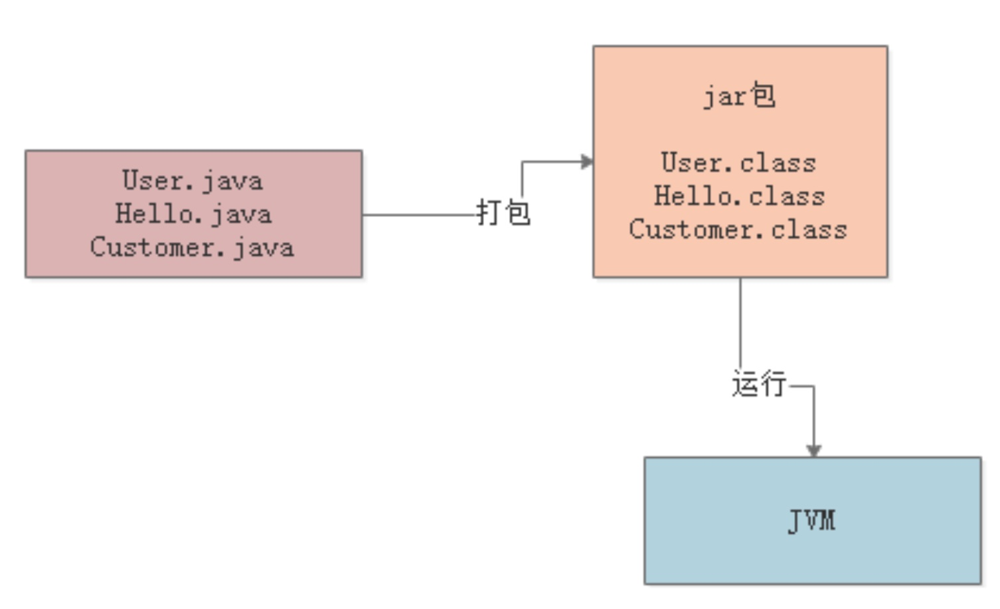
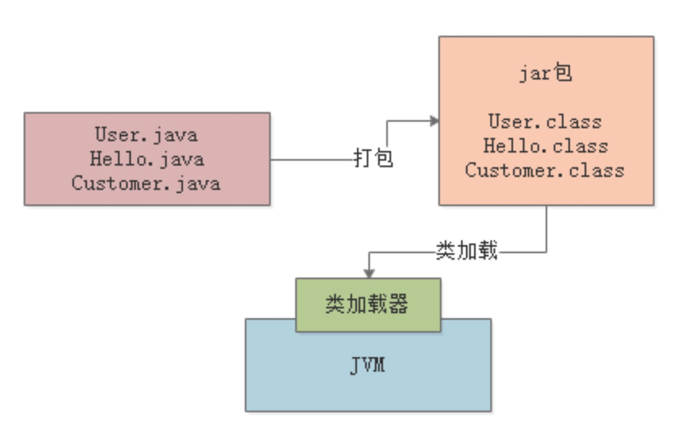
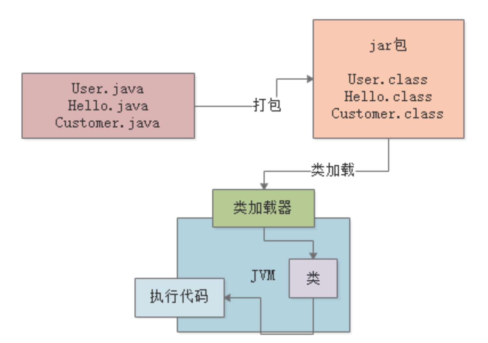

一探究竟：
我们的Java代码到底是如何运行起来的？
本文是我们正式开始讲解JVM的第一篇文章。
第一周我们不会讲解太多过于深奥的原理知识，那样会让很多原本对JVM不太了解的同学难以平滑的入门。
第一周的内容主要是高屋建瓴的把JVM运行机制的整体脉络梳理清楚，而很多原本对JVM就有一定了解的同学，可以耐下心来，就当做是复习梳理一下。
要研究JVM技术，先得搞明白一个问题：
我们平时写的Java代码，到底是怎么运行起来的？
针对这个问题，我们来一步一步的分析。
首先假设咱们写好了一份Java代码，那这份Java代码中，是不是会包含很多的“.java”为后缀的代码文件？
比如User.java，OrderService.java，CustomerManager.java
其实咱们Java程序员平时在Eclipse、Intellij IDEA等开发工具中，就有很多类似这样的Java源代码文件。
那么大家现在思考一下，当我们写好这些“.java”后缀的代码文件之后，接下来你要部署到线上的机器上去运行，你会怎么做？
一般来说，都是把代码给打成“.jar”后缀的jar包，或者是“.war”后缀的war包，是不是？
然后呢，就是把你打包好的jar包或者是war包给放到线上机器去部署。
这个部署就有很多种途径了，但是最基本的一种方式，就是通过Tomcat这类容器来部署代码，也可以是你自己手动通过“java”命令来运行一个jar包中的代码。
咱们先用下面这张图，回忆一下这个顺序。

但是实际上这里有一个非常关键的步骤，那就是“编译”
也就是说，在我们写好的“.java”代码打包的过程中，一般就会把代码编译成“.class”后缀的字节码文件，比如“User.class”，“Hello.class”，”Customer.class“。
然后这个“.class”后缀的字节码文件，他才是可以被运行起来的！
所以首先，无论大家对JVM机制是否熟悉，咱们都先来回顾一下这个编译的过程，以及“.class”字节码文件的概念。
来看看下图，一起来感受一下：

接着我们可能就要思考下一个问题：
对于编译好的这些“.class”字节码，是怎么让他们运行起来的呢？
这个时候就需要使用诸如“java -jar”之类的命令来运行我们写好的代码了。
此时一旦你采用“java”命令，实际上此时就会启动一个JVM进程。
这个JVM就会来负责运行这些“.class”字节码文件，也就相当于是负责运行我们写好的系统。
所以平时我们写好的某个系统在一台机器上部署的时候，你一旦启动这个系统，其实就是启动了一个JVM，由它来负责运行这台机器上运行的这个系统。
对这个概念，大家一定要先搞清楚。
我们还是用一张图来展示一下，相信大家图文结合，会理解的更好。

接着下一步，JVM要运行这些“.class”字节码文件中的代码，那是不是首先得把这些“.class”文件中包含的各种类给加载进来？
这些“.class”文件不就是我们写好的一个一个的类吗？对不对？
此时就会有一个“类加载器”的概念。
此时会采用类加载器把编译好的那些“.class”字节码文件给加载到JVM中，然后供后续代码运行来使用。
我们再看下图。

接着，最后一步，JVM就会基于自己的字节码执行引擎，来执行加载到内存里的我们写好的那些类了
比如你的代码中有一个“main()”方法，那么JVM就会从这个“main()”方法开始执行里面的代码。
他需要哪个类的时候，就会使用类加载器来加载对应的类，反正对应的类就在“.class”文件中。
大家最后看看下面的图。

好，最后我们来对本文小结一下：
无论是对JVM了解或者是不了解的同学，我们都希望通过第一周的基本原理知识讲解，降低学习后面JVM优化实战技术的门槛。
对于了解JVM的同学权当复习梳理，而且鼓励大家在底部评论发言，说说自己的理解和看法。
对于不太了解JVM的小白同学，也可以抄底门槛迅速入门，无缝衔接后续的知识学习。
所以本文从我们平时写“.java”后缀的源代码开始，一步一步梳理了以下的流程：
写好的代码编译成“.class”后缀的字节码文件
JVM是个什么东西
JVM跟我们平时运行在机器上的系统之间是什么关系
类加载器的概念
针对加载进内存的类进行代码的执行
这就是本文讲解的内容总结，希望大家对这部分内容高屋建瓴的先有一个认识。
另外，最后我给大家留一个思考题：既然“.java”文件可以编译成“.class”文件再运行，那么也肯定可以将“.class”文件反编译成“.java”文件。
但是这样的话，如果你们公司的系统代码编译好之后，都是“.class”的格式，但是被别人拿到了，反编译回来不就可以窃取你们公司的核心系统的源代码了？对这个问题，大家觉得应该怎么解决呢？
大家可以思考思考，踊跃提问和发言，明天的文章里，在末尾我会跟大家探讨一下这个问题。